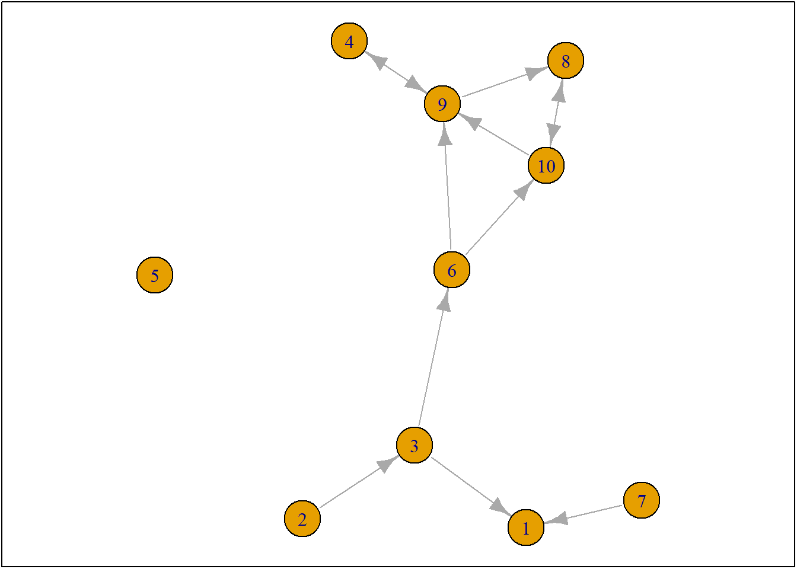
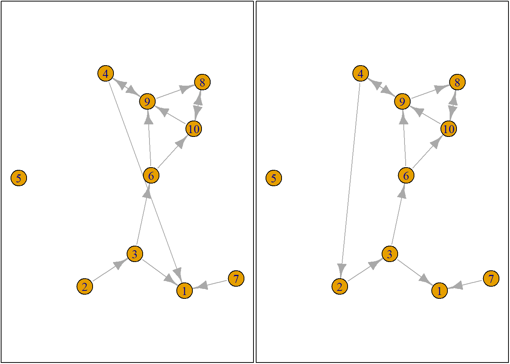
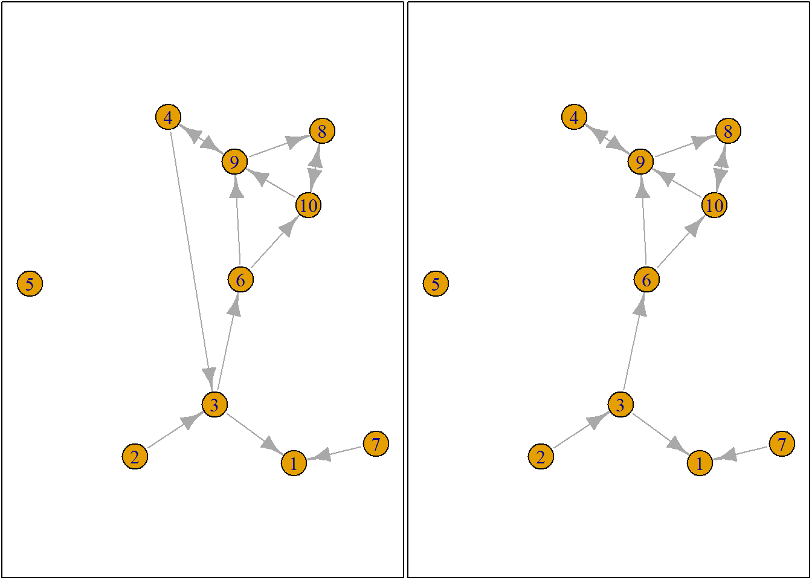
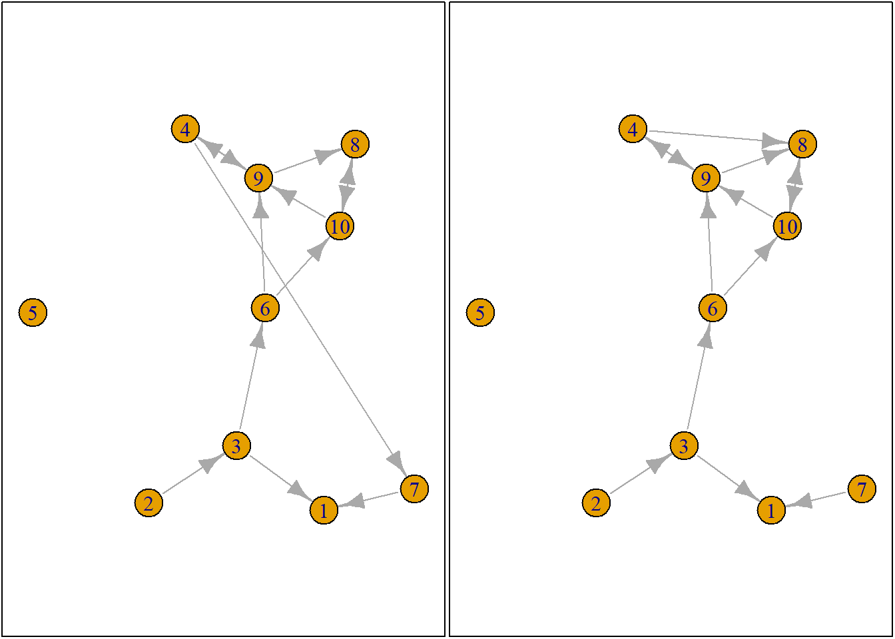
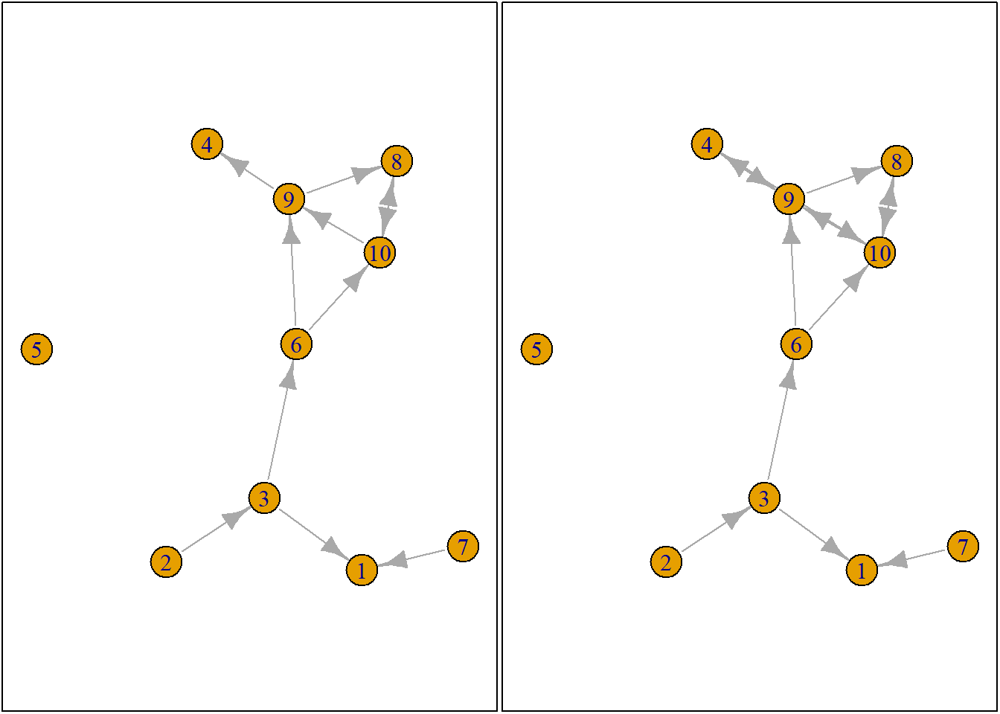

#empty environment
rm(list = ls())
#load packages functions
fpackage.check <- function(packages) {
lapply(packages, FUN = function(x) {
if (!require(x, character.only = TRUE)) {
install.packages(x, dependencies = TRUE)
library(x, character.only = TRUE)
}
})
}
fsave <- function(x, file = NULL, location = "./data/processed/") {
ifelse(!dir.exists("data"), dir.create("data"), FALSE)
ifelse(!dir.exists("data/processed"), dir.create("data/processed"), FALSE)
if (is.null(file))
file = deparse(substitute(x))
datename <- substr(gsub("[:-]", "", Sys.time()), 1, 8)
totalname <- paste(location, datename, file, ".rda", sep = "")
save(x, file = totalname) #need to fix if file is reloaded as input name, not as x.
}
fload <- function(filename) {
load(filename)
get(ls()[ls() != "filename"])
}
fshowdf <- function(x, ...) {
knitr::kable(x, digits = 2, "html", ...) %>%
kableExtra::kable_styling(bootstrap_options = c("striped", "hover")) %>%
kableExtra::scroll_box(width = "100%", height = "300px")
}packages = c("RSiena", "devtools", "igraph")
fpackage.check(packages)## [[1]]
## NULL
##
## [[2]]
## NULL
##
## [[3]]
## NULLdevtools::install_github('JochemTolsma/RsienaTwoStep', build_vignettes=TRUE)## Using GitHub PAT from the git credential store.## Skipping install of 'RsienaTwoStep' from a github remote, the SHA1 (f43e4f6e) has not changed since last install.
## Use `force = TRUE` to force installationpackages = c("RsienaTwoStep")
fpackage.check(packages)## Loading required package: RsienaTwoStep## Loading required package: foreach##
## Attaching package: 'foreach'## The following objects are masked from 'package:purrr':
##
## accumulate, when## [[1]]
## NULLSimulation Logic, steps:
Sample ego
Construct possible alternative future networks based on all possible ministeps of ego
Calculate how sampled ego evaluates these possible networks
Let the ego pick a network, that is, let agent decide on a tie-change
GOTO 1 (STOPPING RULE: until you think we have made enough ministeps)#Sample ego
ts_net1## [,1] [,2] [,3] [,4] [,5] [,6] [,7] [,8] [,9] [,10]
## [1,] 0 0 0 0 0 0 0 0 0 0
## [2,] 0 0 1 0 0 0 0 0 0 0
## [3,] 1 0 0 0 0 1 0 0 0 0
## [4,] 0 0 0 0 0 0 0 0 1 0
## [5,] 0 0 0 0 0 0 0 0 0 0
## [6,] 0 0 0 0 0 0 0 0 1 1
## [7,] 1 0 0 0 0 0 0 0 0 0
## [8,] 0 0 0 0 0 0 0 0 0 1
## [9,] 0 0 0 1 0 0 0 1 0 0
## [10,] 0 0 0 0 0 0 0 1 1 0#plot ts_net1
net1g <- graph_from_adjacency_matrix(ts_net1, mode = "directed")
coords <- layout_(net1g, nicely()) #let us keep the layout
par(mar = c(0.1, 0.1, 0.1, 0.1))
{
plot.igraph(net1g, layout = coords)
graphics::box()
}
#randomly select/sample an agent
set.seed(24553253)
ego <- ts_select(net = ts_net1, steps = 1) #in rsienatwostep two actors may make a change together but here not
ego## [1] 4# a list of all possible networks after all possible tie-changes available to an ego given the current network
options <- ts_alternatives_ministep(net = ts_net1, ego = ego)
# options
plots <- lapply(options, graph_from_adjacency_matrix, mode = "directed")
par(mar = c(0, 0, 0, 0) + 0.1)
par(mfrow = c(1, 2))
fplot <- function(x) {
plot.igraph(x, layout = coords, margin = 0)
graphics::box()
}
lapply(plots, fplot)
## [[1]]
## NULL
##
## [[2]]
## NULL
##
## [[3]]
## NULL
##
## [[4]]
## NULL
##
## [[5]]
## NULL
##
## [[6]]
## NULL
##
## [[7]]
## NULL
##
## [[8]]
## NULL
##
## [[9]]
## NULL
##
## [[10]]
## NULL#number of ties ego sends to alters
ts_degree(net = options[[1]], ego = ego)## [1] 2# or for all options
lapply(options, ts_degree, ego = ego)## [[1]]
## [1] 2
##
## [[2]]
## [1] 2
##
## [[3]]
## [1] 2
##
## [[4]]
## [1] 1
##
## [[5]]
## [1] 2
##
## [[6]]
## [1] 2
##
## [[7]]
## [1] 2
##
## [[8]]
## [1] 2
##
## [[9]]
## [1] 0
##
## [[10]]
## [1] 2#count number of reciprocated ties
lapply(options, ts_recip, ego = ego)## [[1]]
## [1] 1
##
## [[2]]
## [1] 1
##
## [[3]]
## [1] 1
##
## [[4]]
## [1] 1
##
## [[5]]
## [1] 1
##
## [[6]]
## [1] 1
##
## [[7]]
## [1] 1
##
## [[8]]
## [1] 1
##
## [[9]]
## [1] 0
##
## [[10]]
## [1] 1# ts_degree(options[[option]], ego = ego) --> counts outsending degrees for ego #4
# multiply that by statistic degree: -1 --> ego does not like to send ties
# add: ts_recip(options[[option]], ego = ego) multiplied by reciprocity parameter: 1.5 --> ego likes reciprocated ties
option <- 4 #4 is one of the options that ego #4 has
ts_degree(options[[option]], ego = ego) * -1 + ts_recip(options[[option]], ego = ego) * 1.5## [1] 0.5#evaluation
eval <- ts_eval(net = options[[option]], ego = ego, statistics = list(ts_degree, ts_recip), parameters = c(-1,
1.5))
eval## [1] 0.5#evaluation of all networks
eval <- sapply(options, FUN = ts_eval, ego = ego, statistics = list(ts_degree, ts_recip), parameters = c(-1,
1.5))
eval## [1] -0.5 -0.5 -0.5 0.5 -0.5 -0.5 -0.5 -0.5 0.0 -0.5print("network with maximum evaluation score:")## [1] "network with maximum evaluation score:"which.max(eval)## [1] 4# probabilities will sum up to 1: it will either happen or not, total is 1
# translate evaluation score by taking the exponent of them
exp(-0.5)## [1] 0.6065307exp(0.5)## [1] 1.648721#normalizing the probabilities
choice <- sample(1:length(eval), size = 1, prob = exp(eval)/sum(exp(eval)))
print("choice:")## [1] "choice:"choice## [1] 10#print('network:') options[[choice]]#simulate how the network could evolve:
rate <- 2
degree <- -1
recip <- 1.5
ts_sims(nsims = 1, net = ts_net1, startvalues = c(rate, degree, recip), statistics = list(ts_degree,
ts_recip), p2step = c(1, 0, 0), chain = FALSE) #not that rate parameter is automatically included. ## [1] "nsim: 1"## [[1]]
## [,1] [,2] [,3] [,4] [,5] [,6] [,7] [,8] [,9] [,10]
## [1,] 0 0 0 0 1 1 0 0 0 0
## [2,] 0 0 1 0 0 1 0 0 0 0
## [3,] 0 0 0 0 1 1 0 0 0 0
## [4,] 0 0 0 0 0 1 0 0 1 1
## [5,] 0 0 0 0 0 0 0 0 0 0
## [6,] 0 0 0 0 0 0 0 0 1 1
## [7,] 0 0 0 0 0 0 0 0 0 0
## [8,] 0 0 0 0 0 0 0 0 0 0
## [9,] 1 0 0 1 0 0 0 0 0 0
## [10,] 0 0 0 0 0 0 0 1 0 0#shows one of the possible networks. Do this a trillion times to find the most likely#estimation logic
# we do not calculate SE for now.
#ts_targets(net1 = s501, net2 = s502, statistics = list(ts_degree, ts_recip))
# we do not calculate SE for now.
#ans <- ts_estim(net1 = s501, net2 = s502, statistics = list(ts_degree, ts_recip), p2step = c(1, 0, 0),
#conv = 0.01, phase3 = FALSE, itef3 = 50, verbose = TRUE, startvalues = )
#doesnt work#degree parameter positive? -> i like degrees! But, we like few ties over many ties.
#it is generally easier to look at ratios of probabilities -- logit
#Rsiena tests at ego level, not macro level --> need to match your methods, relative importance statistics; parameters, simulations
#Keep in mind that changes are dependent on structure of network at t1#Rate parameter
par(mfrow = c(1, 3))
dist_5 <- rexp(10000, rate = 5)
hist(dist_5, main = "rate = lambda_i = 5", freq = FALSE, xlab = "waiting times", xlim = c(0, 2), ylim = c(0,
9))
abline(v = 1/5, col = "red")
dist_10 <- rexp(10000, rate = 10)
hist(dist_10, main = "rate= lambda_j = 10", freq = FALSE, xlab = "waiting times", xlim = c(0, 2), ylim = c(0,
9))
abline(v = 1/10, col = "red")
dist_15 <- rexp(10000, rate = 15)
hist(dist_10, main = "rate = lambda_k = 15", freq = FALSE, xlab = "waiting times", xlim = c(0, 2), ylim = c(0,
9))
abline(v = 1/15, col = "red")